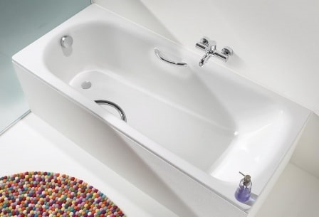
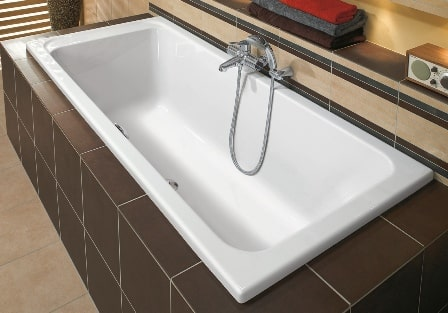
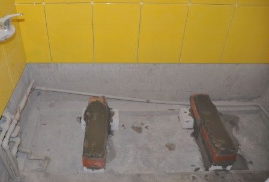
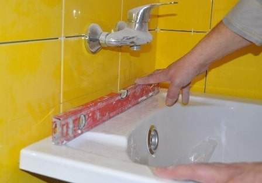
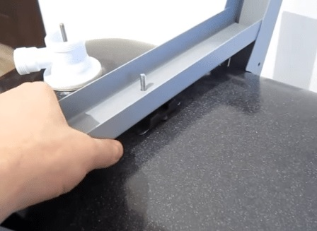
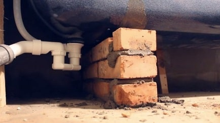
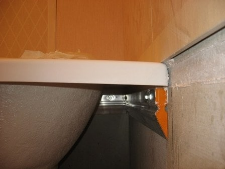
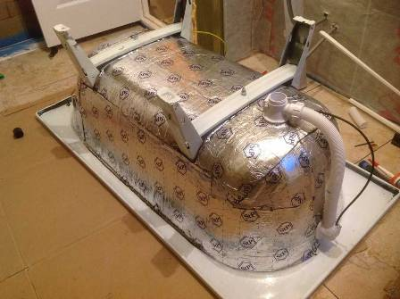
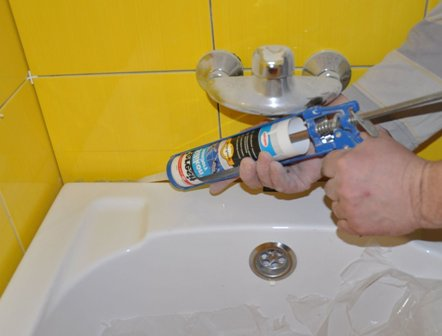

Установка стальной ванны – Недорого, выгодно, удобно
Недорого – профессиональная установка стальной ванны с безупречным исполнением. Сервис «Лидер Услуг» рекомендует квалифицированных частных специалистов – уже сегодня вы назначите встречу и сможете обговорить условия работы. Гарантируем надежность, качество, безопасность. Выбирайте мастера и созванивайтесь.

Если вам для установки сантехники требуется грамотный исполнитель, имеет смысл вызвать ремонтника через надежный ресурс. Самостоятельный монтаж заканчивается, как правило, разгерметизацией сливной системы и протечками. Хотите жить спокойно – обращайтесь к профессионалам.
Процесс выполняется в несколько этапов:
- непосредственно установка самой ванны;
- сборка водоотводящей конструкции, включая перелив;
- проверка на герметичность.
Одна из особенностей стальных, а значит металлических ванн – сильный шум при наборе воды. При необходимости можно выполнить шумоизоляцию – в этом случае стенки с наружной стороны обрабатывают звукопоглощающим материалом.
Важно. Будьте внимательны при просмотре объявлений в Москве – довольно часто их дают некомпетентные исполнители.
При обращении на наш ресурс монтаж стальной ванны выполнят сантехники, подтвердившие свое мастерство документально и практически. С нами работать – удобно.
Установка стальной ванны – Цены, гарантии
При необходимости установить стальную ванну качественно и без переплаты, рекомендуем вызвать специалиста, зарегистрированного на нашей площадке. Частные исполнители работают по разумным расценкам, при этом суммарная стоимость заказа по силам всем жителям города и области без исключения.

Почему, чтобы поставить сантехнику, клиенты обращаются в наш сервис:
- недорого – услуги мастеров, рекомендованных нашим ресурсом, обходятся на 40-60% дешевле, чем обращение в сервисные компании;
- быстро – частные специалисты работают на результат, поэтому им выгодно не затягивать время;
- гарантии – при недовольстве заказчика или при некачественно выполненных работах исправляем ошибки самостоятельно, за свой счет;
- безопасно – исполнители проходят обязательную процедуру верификации (подтверждения личных данных).
Для облегчения выбора предусмотрена рейтинговая шкала по пятибалльной системе, учитывающей все параметры – профессионализм, обязательность, пунктуальность, вежливость.
Предлагаем недорогой монтаж стальной ванны недорого. Низкая цена за работу и отличное качество выполнения – веское основание вызвать сантехника через LiderUslug. Чтобы заказать услугу в Москве и Московской области, заполните простую форму заявки на сайте. Этого достаточно, чтобы через одну минуту уже договариваться с мастером.
Как установить стальную ванну своими руками
Всем привет. Сегодня вы узнаете, как выполнить установку стальной ванны самостоятельно – на ножки, каркас или кирпич. При желании с работой можно справиться своими руками, без помощи посторонних, при наличии даже минимальных навыков. Учтите, здесь есть одно «но» – предельная точность при разметке стены и соблюдение порядка монтажа.
Правильней задачу следует сформулировать так – поставить стальную ванну правильно. Так, чтобы избежать возможных перекосов и перевертывания при наполнении ее водой или когда в ней находится человек.
Подготовительные работы и инструмент

Стальные ванны, как и другие, устанавливают уже на готовый пол и при облицованных стенах. Возможен вариант, когда нижний (ближний к краям) ряд не выводят. Обычно такой вариант практикуют при креплении в стены.
Что должно быть готово для монтажа:
- пол и стены облицованы плиткой или панелями;
- сама ванна проверена на отсутствие дефектов;
- пол защищен пленкой или картоном;
- подобраны комплектующие.
Изначально необходимо определить способ крепления ванны. При традиционной установке около стен ванну ставят на ножки и опоры по трем сторонам. При угловой форме изделия или других особенностях конструкции более рациональным будет сварить полноценный каркас, полностью исключающий риск перевертывания.
Возможен вариант монтажа стальной ванны на кирпичные опоры. При таком подходе может быть изменен порядок работ – сначала выводят основания из кирпича, затем проводят их облицовку и только после этого – установку.

Подбираем инструмент. В обязательный набор входят:
- строительный уровень и правило (планка или доска, на которую будет ставиться уровень);
- электродрель;
- сварочный аппарат (при использовании металлических уголков);
- вилочный ключ.
Также для установки стальной ванны понадобится:
- монтажная пена;
- силиконовый герметик;
- изолента или лента фум;
- водостойкая краска – по дереву или металлу;
- деревянные бруски или уголок – для дополнительного усиления.
Еще одно замечание. Хоть и принято считать, что ванну из стали можно поставить одному человеку, лучше позвать на помощь еще кого-то – чтобы исключить возможность повреждения напольного покрытия и эмали при переворачивании изделия.
Установка стальной ванны - Общие принципы работы или как избежать ошибок
Все, что я сейчас скажу, кажется элементарным. Но ошибки потому и называются типичными, что основная масса установщиков забывают об основных правилах монтажа стальных ванн.
На что обращаем внимание при самостоятельной установке:
- Расположение канализационной трубы – дно ванны должно быть выше места врезки в канализацию, иначе слив станет затрудненным.
- Производители уже учли в конструкции наклон дна – не надо дополнительно приподнимать одну из сторон, ванна должна стоять строго по уровню.
- Систему перелива следует поставить до закрепления на месте, иначе с этим могут возникнуть проблемы.
- Высоту ножек регулируем, пока ванна еще не закреплена акрилом или строительным раствором.
- Плохо затянутые крепления ножек могут привести в последствии к сдвигу стальной ванны и нарушению герметизации.
Первым делом чертим карандашом на высоте 60 см от пола ровную горизонтальную линию вдоль стен, где будет установлена ванна. Это и будет ваш основной ориентир при установке.
Советую решить заранее вопрос о наличии пространства (обычно в пределах 10-12 см) между полом и экраном – во время мытья или стирки при сплошной закрытой стенке стоять около ванны будет неудобно.
До начала работ укладываем изделие на пол дном к стене, сливное отверстие при этом должно находиться со стороны канализационных труб.
Установка перелива стальной ванны
Важнейшее действие – установка перелива и соединение его с системой выпуска. Не поленитесь посмотреть инструкцию по сборке – там дано подробное пошаговое руководство.
Собираем систему. Прокладки обрабатываем герметиком, при наличии резьбовых узлов используем фум-ленту. Проверяем прочность креплений и стыков, пока визуально.
Монтаж стальной ванны на ножки

Традиционный способ установки стальной ванны – на ножки. Комплект креплений прилагается к модели или выбирается отдельно. При работе внимательно следим за тем, чтобы все гайки были прикручены равномерно и плотно, но без излишнего напряжения.
Особенности монтажа стальной ванны на ножки:
- крепления прикручиваем на стадии монтажа дополнительного усиления по стенам (или без него), для удобства можно перевернуть изделие вверх дном;
- «черновую» регулировку производим после установки креплений – ориентируемся на указанную в паспорте глубину ванны и стандартную высоту монтажа 60 см;
- ножки подкручиваем постепенно и поочередно, чтобы не допустить перекоса деталей.
После того, как ванна была перевернута и поставлена на ножки, начинаем выравнивание. Бортики должны находиться на отметке 60 см или опираться на установленное ранее усиление. Уровень должен находиться по диагонали чаши.
Известен еще один вариант крепления ножек – на широком двустороннем скотче. Но, как показывает практика, монтировать стальные ванны все же следует традиционным способом на гайках и болтах.
Монтаж дополнительного усиления своими руками
Чтобы придать всей конструкции максимальную устойчивость, можно провести пристенное усиление. Для этого чуть ниже отмеченного уровня крепим к стенам деревянные бруски 50х50 см или металлический уголок (обычно берут 25 мм). Обрезку отдельных элементов проводим под углом 45 °.
Именно на этой стадии потребуется дрель или перфоратор. Ставим дюбеля, намечаем места просверливания и загоняем длинные саморезы. Полученный полукаркас обрабатываем водостойким составом и ждем до полного высыхания. Теперь можно установить ванну вместе с ножками.
Хочу сказать, что многие отказываются проводить такое усиление – стальную ванну можно прикрепить к стене при помощи обычных кронштейнов.
Установка стальной ванны на кирпичи

Не менее распространен еще один способ монтажа стальной ванны, – на кирпичные стойки или подиум. Кирпич можно брать любой – красный, силикатный, пустотелый и даже огнеупорный. Я лично рекомендую красный, он менее подвержен действию влаги.
В большинстве случаев выкладывают две стойки высотой в 3-4 кирпича (в зависимости от нужной высоты).
Порядок действий по установке стальной ванны на опоры:
- по длине ряда укладывают по два кирпича без разбежки;
- после того, как схватится цемент, на опоры укладывают раствор и только затем ставят ванну;
- стальную чашу в месте соединения смазывают цементом на высоту примерно полкирпича.
Такой способ крепления считается одним из самых устойчивых и прочных.
Еще раз повторю, не забываем, что каждый шаг совершаем с уровнем.
Установка стальной ванны на каркас

В тех случаях, когда стальная ванна имеет сложную форму или предполагается ее установка вдали от стен, нужно изготовить под нее полноценный каркас. Для этих целей лучше взять не дерево, а металл – как более прочный и не подверженный коррозии материал.
Варить начинают с нижнего основания, при этом выводят точную форму каркаса. Затем приваривают вертикальные стойки – в углах, местах с основной нагрузкой и шагом не менее 50 см. Верхний контур крепят уже на вертикальные опоры. Затем всю конструкцию необходимо обработать защитным составом.
Стальная ванна на таком каркасе гарантированно будет стоять, что называется, вечно – уронить ее или хотя бы сдвинуть с места не представляется возможным.
Заземление
При установке стальной ванны на металлическую конструкцию ее необходимо заземлить. Для этого кидаем медный провод (рекомендуемое сечение – 2,5 мм2) от наружной стенки на металлическую стойку. Ни в коем случае нельзя заземлять на водопроводные и канализационные трубы.
Шумоизоляция и утепление при монтаже стальной ванны
Характерное свойство всех стальных ванн – издавать своеобразный шум (гул) при наполнении их водой и быстро отдавать тепло. Вода в такой емкости остывает очень быстро.
Что можно сделать:

- Оклеить наружные стенки стальной ванны листами экструдированного полистирола, лучше брать фольгированный материал. Перед наклеиванием поверхность необходимо обезжирить любым универсальным растворителем, бензином или спиртом. Нахлест должен составлять 2-3 см. Имеет смысл купить самоклеящиеся маты, работать будет немного проще. Необходимо следить за тем, чтобы поверхность утеплителя лежала ровно, без пузырей. При их появлении следует проткнуть иголкой, осторожно под надавливанием выпустить воздух и прижать материал к стенке. Результат – отличный.
- Использовать монтажную пену. Ванна должна лежать вверх дном. Сразу заклеиваем малярным скотчем места соединения со сливными патрубками. На наружные стенки наносим сеткой герметик – это позволит усилить адгезию. После приступаем к нанесению пены. Важно – начинаем с низа и поднимаемся постепенно к дну. Пену наносим медленно, с перерывами, чтобы дать ей возможность застынуть без сползания вниз.Ванну переворачиваем только после полного засыхания утеплителя.
- Еще один вариант – использовать техническую пробку. На стальные стенки ванны наносят клей, на который укладывают пробковые листы. Способ представляет особый интерес для тех, кто отделывает свои дома в эко-стиле.
Без сомнения, обработанная одним из таких способов стальная ванна лучше удерживает тепло, меньше слышен шум падающей воды.
Установка стальной ванны - Заключительные действия

Итак, наша стальная ванна уже утеплена и установлена на ножки. Начинаем присоединение сантехнической обвязки. Система уже должна быть собрана, перелив установлен. Проверяем выпуски – они должны стоять без перекосов и плотно прилегать к эмали.
Завершающий шаг монтажа– врезка в канализацию и проверка на герметичность (контрольный слив). Вытираем пол насухо, раскладываем под местами соединений туалетную бумага или салфетки, набираем в ванну наполовину горячую воду и вытягиваем пробку. Смотрим внимательно, нет ли где протечек и при необходимости поправляем прокладку или подтягиваем гайку.
Стальная ванна установлена. Остается теперь провести работы по окончательной отделке мест соединения со стеной. Для заделки зазоров используем герметик, клей для плитки, монтажную пену. Сразу после этого наливаем в ванну горячую воду и оставляем до полного схватывания материала. Крепим декоративный пластиковый уголок и пользуемся.